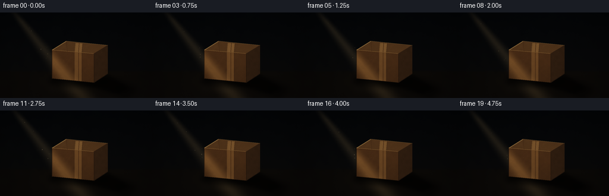
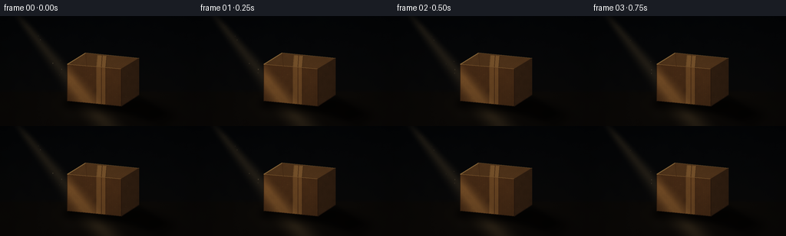

CODING AGENTS AS PIXEL WORLD MODELS
traex/GPT-5.6-Sol · phygen_045
点击播放 · 原生 RGB 像素
逐轮保存的候选
回放视频、检查图与代码变化。
每份候选均可单独播放。实际图片检查记录在下方工具轨迹中。
候选 01播放与检查图
点击播放 · 原生 RGB 像素


展开代码变化
--- 上一保存版本
+++ 本次保存版本
@@ -0,0 +1,217 @@
+from pathlib import Path
+import math
+import numpy as np
+from PIL import Image, ImageDraw, ImageFilter
+import artifact_io
+
+# Procedural, deterministic low-light product shot. It is rendered oversized and
+# reduced at the end so all polygonal geometry has natural antialiased edges.
+W, H, N = 256, 144, 20
+S = 3
+w, h = W*S, H*S
+rng = np.random.default_rng(45045)
+
+
+def mask_polygon(points, blur=0.0):
+ im = Image.new("L", (w, h), 0)
+ ImageDraw.Draw(im).polygon([(int(x*S), int(y*S)) for x, y in points], fill=255)
+ if blur:
+ im = im.filter(ImageFilter.GaussianBlur(blur*S))
+ return np.asarray(im, dtype=np.float32) / 255.0
+
+
+def mask_ellipse(box, blur=0.0):
+ im = Image.new("L", (w, h), 0)
+ ImageDraw.Draw(im).ellipse(tuple(int(v*S) for v in box), fill=255)
+ if blur:
+ im = im.filter(ImageFilter.GaussianBlur(blur*S))
+ return np.asarray(im, dtype=np.float32) / 255.0
+
+
+def fbm_noise(seed, low_scale=22):
+ rr = np.random.default_rng(seed)
+ out = np.zeros((h, w), np.float32)
+ weights = [0.52, 0.28, 0.14, 0.06]
+ sizes = [(max(2, w//low_scale), max(2, h//low_scale)),
+ (max(2, w//9), max(2, h//9)),
+ (max(2, w//4), max(2, h//4)), (w, h)]
+ for weight, (sw, sh) in zip(weights, sizes):
+ tiny = rr.normal(0, 1, (sh, sw)).astype(np.float32)
+ tiny = (tiny - tiny.min()) / max(1e-6, tiny.max()-tiny.min())
+ layer = Image.fromarray(np.uint8(tiny*255), 'L').resize((w, h), Image.Resampling.BICUBIC)
+ out += weight * (np.asarray(layer, np.float32)/255.0 - .5)
+ return out
+
+# Stable coordinate fields.
+yy, xx = np.mgrid[0:h, 0:w].astype(np.float32)
+x = xx / S
+y = yy / S
+
+# Fine room and cardboard texture stay fixed in space throughout the shot.
+room_noise = fbm_noise(12, 30)
+card_noise = fbm_noise(83, 18)
+fine_noise = rng.normal(0, 1, (h, w)).astype(np.float32)
+
+# Box geometry: a slightly perspective-distorted closed corrugated carton.
+top_poly = [(87.5, 63.0), (111.5, 48.0), (181.0, 55.2), (158.0, 69.0)]
+front_poly = [(87.5, 63.0), (158.0, 69.0), (158.0, 118.0), (87.5, 111.0)]
+side_poly = [(158.0, 69.0), (181.0, 55.2), (181.0, 103.0), (158.0, 118.0)]
+mtop = mask_polygon(top_poly)
+mfront = mask_polygon(front_poly)
+mside = mask_polygon(side_poly)
+
+# Ground shadow is cast away from the upper-left source, toward frame bottom-right.
+shadow_soft = mask_polygon([(86,106),(157,113),(181,100),(233,130),(211,144),(137,124),(88,115)], 5.5)
+shadow_core = mask_polygon([(89,108),(158,114),(180,103),(217,127),(198,137),(143,122),(89,114)], 2.0)
+contact = mask_ellipse((80,105,185,126), 4.0)
+
+# Small stable fiber marks for the cardboard. They are clipped later by face masks.
+fibers = Image.new('RGBA', (w, h), (0,0,0,0))
+fd = ImageDraw.Draw(fibers)
+for _ in range(165):
+ px = float(rng.uniform(88, 181))*S
+ py = float(rng.uniform(49, 117))*S
+ length = float(rng.uniform(.25, 1.25))*S
+ col = (44, 28, 15, int(rng.integers(15, 42))) if rng.random() < .65 else (231, 182, 105, int(rng.integers(10, 28)))
+ fd.line((px, py, px+length, py+rng.uniform(-.3,.3)*S), fill=col, width=max(1,S//2))
+fibers_arr = np.asarray(fibers, dtype=np.float32)
+
+# Deterministic dust positions represented as (phase, vertical location, lateral offset, radius, brightness).
+dust = []
+for i in range(22):
+ dust.append((rng.random(), rng.uniform(5, 101), rng.normal(0, .40), rng.uniform(.22,.65), rng.uniform(.35,1.0)))
+
+frames = []
+for fi in range(N):
+ t = fi / 4.0
+ # Barely perceptible source fluctuation, like a practical lamp rather than a frozen graphic.
+ pulse = 0.985 + 0.018*math.sin(t*1.22) + 0.007*math.sin(t*3.71 + .8)
+
+ # Near-black wall and floor, with warm low-level bounced light near the ground.
+ wall_grad = np.clip(y / 108.0, 0, 1)
+ base = np.empty((h,w,3), np.float32)
+ base[...,0] = 4.0 + 4.8*wall_grad
+ base[...,1] = 5.5 + 3.1*wall_grad
+ base[...,2] = 7.2 + 1.5*wall_grad
+ floor_blend = np.clip((y-96.0)/5.0, 0, 1)
+ floor_rgb = np.stack([10.0 + .045*(y-96), 8.3 + .028*(y-96), 6.4 + .020*(y-96)], axis=-1)
+ base = base*(1-floor_blend[...,None]) + floor_rgb*floor_blend[...,None]
+ base += (room_noise[...,None]*2.0 + fine_noise[...,None]*.28)
+
+ # Soft diagonal volumetric shaft. The widening profile clearly establishes a ray from upper left.
+ center_x = 24.0 + 0.80*y
+ half_w = 10.0 + 0.155*y
+ d = np.abs(x-center_x) / half_w
+ beam = np.clip(1.0-d, 0, 1)
+ beam = beam*beam*(3-2*beam) # feathered sides
+ beam *= np.clip((y+10)/25, 0, 1)
+ beam *= (0.74 + 0.26*np.exp(-((x-center_x)/(half_w*.38+1))**2))
+ beam *= pulse
+ # Haze itself is restrained; the illuminated carton remains the subject.
+ base += beam[...,None] * np.array([26.0,21.0,13.0], np.float32)
+
+ # A soft pool where the shaft reaches the horizontal floor.
+ u = (x-139.0) + .34*(y-115.0)
+ pool = np.exp(-(u/43.0)**2 - ((y-112.0)/19.0)**2) * np.clip((y-94)/9,0,1) * pulse
+ base += pool[...,None] * np.array([18.0,13.5,7.0], np.float32)
+
+ # Grounded cast shadow: broad penumbra plus a denser core and contact occlusion.
+ base *= (1.0 - .54*shadow_soft[...,None])
+ base *= (1.0 - .43*shadow_core[...,None])
+ base *= (1.0 - .52*contact[...,None])
+
+ # Dust suspended in the shaft, all behind the box.
+ dust_layer = Image.new('RGBA', (w,h), (0,0,0,0))
+ dd = ImageDraw.Draw(dust_layer)
+ for phase, py0, lateral, rad, bright in dust:
+ py = ((py0 + t*(1.05 + phase*.7)) % 106.0)
+ cx = 24.0 + .80*py
+ hw = 8.0 + .13*py
+ px = cx + lateral*hw + math.sin(t*.48 + phase*15)*.55
+ twinkle = max(0.0, .45 + .55*math.sin(phase*37 + t*(1.3+phase)))
+ alpha = int(76*bright*twinkle)
+ rr = rad*S
+ dd.ellipse((px*S-rr,py*S-rr,px*S+rr,py*S+rr), fill=(255,227,169,alpha))
+ dust_layer = dust_layer.filter(ImageFilter.GaussianBlur(.30*S))
+ da = np.asarray(dust_layer, np.float32)
+ a = da[...,3:4]/255.0
+ base = base*(1-a) + da[...,:3]*a
+
+ # Face shader. The same shaft is evaluated on the object surfaces, with orientation response.
+ # Slight tonal modulation gives the unmistakable fibrous, matte cardboard finish.
+ tex = card_noise*14.0 + fine_noise*1.15
+ # subtle manufactured vertical corrugation visible on front face
+ corr = 1.25*np.sin(x*2.55) + .55*np.sin(x*7.7)
+ beam_obj = np.clip(beam*1.38, 0, 1.25)
+
+ front_col = np.zeros_like(base)
+ front_col[...,0] = 66 + 35*beam_obj + tex + corr
+ front_col[...,1] = 40 + 26*beam_obj + tex*.62 + corr*.48
+ front_col[...,2] = 20 + 13*beam_obj + tex*.30
+ # faint downward grime gradient
+ front_col *= (1.03 - .0018*np.clip(y-63,0,55))[...,None]
+
+ top_col = np.zeros_like(base)
+ top_col[...,0] = 76 + 55*beam_obj + tex*1.04
+ top_col[...,1] = 49 + 40*beam_obj + tex*.66
+ top_col[...,2] = 25 + 20*beam_obj + tex*.34
+ # Top plane faces the lamp and receives the strongest warm highlight.
+ top_col += (beam_obj[...,None]**1.5)*np.array([13,10,4],np.float32)
+
+ side_col = np.zeros_like(base)
+ side_col[...,0] = 46 + 16*beam_obj + tex*.73
+ side_col[...,1] = 29 + 11*beam_obj + tex*.44
+ side_col[...,2] = 16 + 5*beam_obj + tex*.24
+ side_col *= (0.98 - .0015*np.clip(x-158,0,23))[...,None]
+
+ for m, col in ((mfront,front_col),(mside,side_col),(mtop,top_col)):
+ base = base*(1-m[...,None]) + col*m[...,None]
+
+ # Draw packing tape, seams, bevels, and abrasion at supersampled resolution.
+ details = Image.new('RGBA',(w,h),(0,0,0,0))
+ ddraw = ImageDraw.Draw(details)
+ P = lambda pts: [(int(a*S),int(b*S)) for a,b in pts]
+ # Tape runs over the top and down the front face.
+ ddraw.polygon(P([(127.0,51.3),(139.2,52.25),(137.9,67.25),(125.9,66.2)]), fill=(181,132,70,92))
+ ddraw.polygon(P([(125.9,66.2),(137.9,67.25),(137.9,116.0),(125.9,114.8)]), fill=(167,116,58,82))
+ # center line and fine tape edges
+ ddraw.line(P([(133.3,51.8),(132.0,65.9),(132.0,115.3)]), fill=(70,42,21,108), width=max(1,S))
+ ddraw.line(P([(127.0,51.3),(125.9,66.2),(125.9,114.8)]), fill=(224,165,87,42), width=max(1,S))
+ ddraw.line(P([(139.2,52.25),(137.9,67.25),(137.9,116.0)]), fill=(38,24,14,55), width=max(1,S))
+ # Carton silhouette seams: shadowed lower/right edges and a fine lit upper-left bevel.
+ ddraw.line(P([(87.5,63),(158,69),(181,55.2)]), fill=(217,164,87,72), width=S)
+ ddraw.line(P([(87.5,63),(87.5,111),(158,118),(181,103)]), fill=(28,17,10,170), width=S)
+ ddraw.line(P([(158,69),(158,118)]), fill=(30,18,10,150), width=S)
+ ddraw.line(P([(111.5,48),(87.5,63)]), fill=(229,179,99,76), width=S)
+ # top flap scoring lines
+ ddraw.line(P([(111.5,48),(113.0,65.2)]), fill=(56,33,17,105), width=max(1,S))
+ ddraw.line(P([(181,55.2),(158,69)]), fill=(37,23,14,110), width=max(1,S))
+ det = np.asarray(details,np.float32)
+ a = det[...,3:4]/255.0
+ base = base*(1-a)+det[...,:3]*a
+
+ # Add tiny fibers only where cardboard exists.
+ cardmask = np.clip(mtop+mfront+mside,0,1)[...,None]
+ fa = fibers_arr[...,3:4]/255.0*cardmask
+ base = base*(1-fa)+fibers_arr[...,:3]*fa
+
+ # Very restrained warm rim where the direct ray catches the upper silhouette.
+ rim = Image.new('RGBA',(w,h),(0,0,0,0))
+ rd = ImageDraw.Draw(rim)
+ rd.line(P([(88,63),(112,48),(181,55)]), fill=(255,207,119,42), width=max(1,S))
+ ra = np.asarray(rim,np.float32)
+ aa=ra[...,3:4]/255.0
+ base=base*(1-aa)+ra[...,:3]*aa
+
+ # Lens/eye response: vignette and subtle toe compression preserve a truly dark room.
+ vx=(x-W/2)/(W*.68); vy=(y-H/2)/(H*.78)
+ vign=np.clip(1.0-.34*(vx*vx+vy*vy),.58,1.0)
+ base*=vign[...,None]
+ base=np.clip(base,0,255)
+ # High quality area reduction to target resolution.
+ frame=Image.fromarray(base.astype(np.uint8),'RGB').resize((W,H),Image.Resampling.LANCZOS)
+ frames.append(np.asarray(frame,dtype=np.uint8))
+
+frames=np.stack(frames,axis=0)
+artifact_io.save(frames, Path(__file__).resolve().parent)
+print(f"saved {frames.shape} {frames.dtype}; range={frames.min()}..{frames.max()}")
可观测工具轨迹
实际执行的命令与返回图片。
命令 1exit 0
/bin/bash -lc "ls -la && printf '\\n--- prompt.txt ---\\n' && cat prompt.txt && printf '\\n--- GENERATION_RULES.md ---\\n' && cat GENERATION_RULES.md"
命令 2exit 0
/bin/bash -lc "printf '%s\\n' '--- task_spec.json ---' && cat task_spec.json && printf '%s\\n' '--- available executables ---' && command -v ffmpeg || true; command -v blender || true; command -v python3 || true"
命令 3exit 0
/bin/bash -lc "sed -n '1,260p' artifact_io.py && printf '\\n--- player template excerpt ---\\n' && sed -n '1,220p' player_template.html"
命令 4exit 0
/bin/bash -lc "cat > generate.py <<'PY'
from pathlib import Path
import math
import numpy as np
from PIL import Image, ImageDraw, ImageFilter
import artifact_io
# Procedural, deterministic low-light product shot. It is rendered oversized and
# reduced at the end so all polygonal geometry has natural antialiased edges.
W, H, N = 256, 144, 20
S = 3
w, h = W*S, H*S
rng = np.random.default_rng(45045)
def mask_polygon(points, blur=0.0):
im = Image.new(\"L\", (w, h), 0)
ImageDraw.Draw(im).polygon([(int(x*S), int(y*S)) for x, y in points], fill=255)
if blur:
im = im.filter(ImageFilter.GaussianBlur(blur*S))
return np.asarray(im, dtype=np.float32) / 255.0
def mask_ellipse(box, blur=0.0):
im = Image.new(\"L\", (w, h), 0)
ImageDraw.Draw(im).ellipse(tuple(int(v*S) for v in box), fill=255)
if blur:
im = im.filter(ImageFilter.GaussianBlur(blur*S))
return np.asarray(im, dtype=np.float32) / 255.0
def fbm_noise(seed, low_scale=22):
rr = np.random.default_rng(seed)
out = np.zeros((h, w), np.float32)
weights = [0.52, 0.28, 0.14, 0.06]
sizes = [(max(2, w//low_scale), max(2, h//low_scale)),
(max(2, w//9), max(2, h//9)),
(max(2, w//4), max(2, h//4)), (w, h)]
for weight, (sw, sh) in zip(weights, sizes):
tiny = rr.normal(0, 1, (sh, sw)).astype(np.float32)
tiny = (tiny - tiny.min()) / max(1e-6, tiny.max()-tiny.min())
layer = Image.fromarray(np.uint8(tiny*255), 'L').resize((w, h), Image.Resampling.BICUBIC)
out += weight * (np.asarray(layer, np.float32)/255.0 - .5)
return out
# Stable coordinate fields.
yy, xx = np.mgrid[0:h, 0:w].astype(np.float32)
x = xx / S
y = yy / S
# Fine room and cardboard texture stay fixed in space throughout the shot.
room_noise = fbm_noise(12, 30)
card_noise = fbm_noise(83, 18)
fine_noise = rng.normal(0, 1, (h, w)).astype(np.float32)
# Box geometry: a slightly perspective-distorted closed corrugated carton.
top_poly = [(87.5, 63.0), (111.5, 48.0), (181.0, 55.2), (158.0, 69.0)]
front_poly = [(87.5, 63.0), (158.0, 69.0), (158.0, 118.0), (87.5, 111.0)]
side_poly = [(158.0, 69.0), (181.0, 55.2), (181.0, 103.0), (158.0, 118.0)]
mtop = mask_polygon(top_poly)
mfront = mask_polygon(front_poly)
mside = mask_polygon(side_poly)
# Ground shadow is cast away from the upper-left source, toward frame bottom-right.
shadow_soft = mask_polygon([(86,106),(157,113),(181,100),(233,130),(211,144),(137,124),(88,115)], 5.5)
shadow_core = mask_polygon([(89,108),(158,114),(180,103),(217,127),(198,137),(143,122),(89,114)], 2.0)
contact = mask_ellipse((80,105,185,126), 4.0)
# Small stable fiber marks for the cardboard. They are clipped later by face masks.
fibers = Image.new('RGBA', (w, h), (0,0,0,0))
fd = ImageDraw.Draw(fibers)
for _ in range(165):
px = float(rng.uniform(88, 181))*S
py = float(rng.uniform(49, 117))*S
length = float(rng.uniform(.25, 1.25))*S
col = (44, 28, 15, int(rng.integers(15, 42))) if rng.random() < .65 else (231, 182, 105, int(rng.integers(10, 28)))
fd.line((px, py, px+length, py+rng.uniform(-.3,.3)*S), fill=col, width=max(1,S//2))
fibers_arr = np.asarray(fibers, dtype=np.float32)
# Deterministic dust positions represented as (phase, vertical location, lateral offset, radius, brightness).
dust = []
for i in range(22):
dust.append((rng.random(), rng.uniform(5, 101), rng.normal(0, .40), rng.uniform(.22,.65), rng.uniform(.35,1.0)))
frames = []
for fi in range(N):
t = fi / 4.0
# Barely perceptible source fluctuation, like a practical lamp rather than a frozen graphic.
pulse = 0.985 + 0.018*math.sin(t*1.22) + 0.007*math.sin(t*3.71 + .8)
# Near-black wall and floor, with warm low-level bounced light near the ground.
wall_grad = np.clip(y / 108.0, 0, 1)
base = np.empty((h,w,3), np.float32)
base[...,0] = 4.0 + 4.8*wall_grad
base[...,1] = 5.5 + 3.1*wall_grad
base[...,2] = 7.2 + 1.5*wall_grad
floor_blend = np.clip((y-96.0)/5.0, 0, 1)
floor_rgb = np.stack([10.0 + .045*(y-96), 8.3 + .028*(y-96), 6.4 + .020*(y-96)], axis=-1)
base = base*(1-floor_blend[...,None]) + floor_rgb*floor_blend[...,None]
base += (room_noise[...,None]*2.0 + fine_noise[...,None]*.28)
# Soft diagonal volumetric shaft. The widening profile clearly establishes a ray from upper left.
center_x = 24.0 + 0.80*y
half_w = 10.0 + 0.155*y
d = np.abs(x-center_x) / half_w
beam = np.clip(1.0-d, 0, 1)
beam = beam*beam*(3-2*beam) # feathered sides
beam *= np.clip((y+10)/25, 0, 1)
beam *= (0.74 + 0.26*np.exp(-((x-center_x)/(half_w*.38+1))**2))
beam *= pulse
# Haze itself is restrained; the illuminated carton remains the subject.
base += beam[...,None] * np.array([26.0,21.0,13.0], np.float32)
# A soft pool where the shaft reaches the horizontal floor.
u = (x-139.0) + .34*(y-115.0)
pool = np.exp(-(u/43.0)**2 - ((y-112.0)/19.0)**2) * np.clip((y-94)/9,0,1) * pulse
base += pool[...,None] * np.array([18.0,13.5,7.0], np.float32)
# Grounded cast shadow: broad penumbra plus a denser core and contact occlusion.
base *= (1.0 - .54*shadow_soft[...,None])
base *= (1.0 - .43*shadow_core[...,None])
base *= (1.0 - .52*contact[...,None])
# Dust suspended in the shaft, all behind the box.
dust_layer = Image.new('RGBA', (w,h), (0,0,0,0))
dd = ImageDraw.Draw(dust_layer)
for phase, py0, lateral, rad, bright in dust:
py = ((py0 + t*(1.05 + phase*.7)) % 106.0)
cx = 24.0 + .80*py
hw = 8.0 + .13*py
px = cx + lateral*hw + math.sin(t*.48 + phase*15)*.55
twinkle = max(0.0, .45 + .55*math.sin(phase*37 + t*(1.3+phase)))
alpha = int(76*bright*twinkle)
rr = rad*S
dd.ellipse((px*S-rr,py*S-rr,px*S+rr,py*S+rr), fill=(255,227,169,alpha))
dust_layer = dust_layer.filter(ImageFilter.GaussianBlur(.30*S))
da = np.asarray(dust_layer, np.float32)
a = da[...,3:4]/255.0
base = base*(1-a) + da[...,:3]*a
# Face shader. The same shaft is evaluated on the object surfaces, with orientation response.
# Slight tonal modulation gives the unmistakable fibrous, matte cardboard finish.
tex = card_noise*14.0 + fine_noise*1.15
# subtle manufactured vertical corrugation visible on front face
corr = 1.25*np.sin(x*2.55) + .55*np.sin(x*7.7)
beam_obj = np.clip(beam*1.38, 0, 1.25)
front_col = np.zeros_like(base)
front_col[...,0] = 66 + 35*beam_obj + tex + corr
front_col[...,1] = 40 + 26*beam_obj + tex*.62 + corr*.48
front_col[...,2] = 20 + 13*beam_obj + tex*.30
# faint downward grime gradient
front_col *= (1.03 - .0018*np.clip(y-63,0,55))[...,None]
top_col = np.zeros_like(base)
top_col[...,0] = 76 + 55*beam_obj + tex*1.04
top_col[...,1] = 49 + 40*beam_obj + tex*.66
top_col[...,2] = 25 + 20*beam_obj + tex*.34
# Top plane faces the lamp and receives the strongest warm highlight.
top_col += (beam_obj[...,None]**1.5)*np.array([13,10,4],np.float32)
side_col = np.zeros_like(base)
side_col[...,0] = 46 + 16*beam_obj + tex*.73
side_col[...,1] = 29 + 11*beam_obj + tex*.44
side_col[...,2] = 16 + 5*beam_obj + tex*.24
side_col *= (0.98 - .0015*np.clip(x-158,0,23))[...,None]
for m, col in ((mfront,front_col),(mside,side_col),(mtop,top_col)):
base = base*(1-m[...,None]) + col*m[...,None]
# Draw packing tape, seams, bevels, and abrasion at supersampled resolution.
details = Image.new('RGBA',(w,h),(0,0,0,0))
ddraw = ImageDraw.Draw(details)
P = lambda pts: [(int(a*S),int(b*S)) for a,b in pts]
# Tape runs over the top and down the front face.
ddraw.polygon(P([(127.0,51.3),(139.2,52.25),(137.9,67.25),(125.9,66.2)]), fill=(181,132,70,92))
ddraw.polygon(P([(125.9,66.2),(137.9,67.25),(137.9,116.0),(125.9,114.8)]), fill=(167,116,58,82))
# center line and fine tape edges
ddraw.line(P([(133.3,51.8),(132.0,65.9),(132.0,115.3)]), fill=(70,42,21,108), width=max(1,S))
ddraw.line(P([(127.0,51.3),(125.9,66.2),(125.9,114.8)]), fill=(224,165,87,42), width=max(1,S))
ddraw.line(P([(139.2,52.25),(137.9,67.25),(137.9,116.0)]), fill=(38,24,14,55), width=max(1,S))
# Carton silhouette seams: shadowed lower/right edges and a fine lit upper-left bevel.
ddraw.line(P([(87.5,63),(158,69),(181,55.2)]), fill=(217,164,87,72), width=S)
ddraw.line(P([(87.5,63),(87.5,111),(158,118),(181,103)]), fill=(28,17,10,170), width=S)
ddraw.line(P([(158,69),(158,118)]), fill=(30,18,10,150), width=S)
ddraw.line(P([(111.5,48),(87.5,63)]), fill=(229,179,99,76), width=S)
# top flap scoring lines
ddraw.line(P([(111.5,48),(113.0,65.2)]), fill=(56,33,17,105), width=max(1,S))
ddraw.line(P([(181,55.2),(158,69)]), fill=(37,23,14,110), width=max(1,S))
det = np.asarray(details,np.float32)
a = det[...,3:4]/255.0
base = base*(1-a)+det[...,:3]*a
# Add tiny fibers only where cardboard exists.
cardmask = np.clip(mtop+mfront+mside,0,1)[...,None]
fa = fibers_arr[...,3:4]/255.0*cardmask
base = base*(1-fa)+fibers_arr[...,:3]*fa
# Very restrained warm rim where the direct ray catches the upper silhouette.
rim = Image.new('RGBA',(w,h),(0,0,0,0))
rd = ImageDraw.Draw(rim)
rd.line(P([(88,63),(112,48),(181,55)]), fill=(255,207,119,42), width=max(1,S))
ra = np.asarray(rim,np.float32)
aa=ra[...,3:4]/255.0
base=base*(1-aa)+ra[...,:3]*aa
# Lens/eye response: vignette and subtle toe compression preserve a truly dark room.
vx=(x-W/2)/(W*.68); vy=(y-H/2)/(H*.78)
vign=np.clip(1.0-.34*(vx*vx+vy*vy),.58,1.0)
base*=vign[...,None]
base=np.clip(base,0,255)
# High quality area reduction to target resolution.
frame=Image.fromarray(base.astype(np.uint8),'RGB').resize((W,H),Image.Resampling.LANCZOS)
frames.append(np.asarray(frame,dtype=np.uint8))
frames=np.stack(frames,axis=0)
artifact_io.save(frames, Path(__file__).resolve().parent)
print(f\"saved {frames.shape} {frames.dtype}; range={frames.min()}..{frames.max()}\")
PY
python3 generate.py
ls -lh pixels.npz inspection.png transition_check.png index.html frames/00.png frames/19.png"命令 5exit 1
/bin/bash -lc "python3 - <<'PY'
from PIL import Image
import numpy as np
im=np.asarray(Image.open('frames/10.png').convert('L'))
# Coarse terminal luminance preview, preserving 16:9 proportions.
thumb=np.asarray(Image.fromarray(im).resize((64,18),Image.Resampling.BILINEAR))
chars=' .,:;irsXA253hMHGS#9B&@'
for row in thumb:
print(''.join(chars[min(len(chars)-1,int(v)/256*len(chars))] for v in row))
print('\\nregion means:')
regions={'dark upper-right':im[0:45,170:256], 'beam':im[45:100,50:115], 'box':im[48:119,87:182], 'bottom shadow':im[112:144,137:225], 'floor left':im[112:144,0:75]}
for k,v in regions.items(): print(f'{k:18s} mean={v.mean():5.1f} p95={np.percentile(v,95):5.1f}')
PY"命令 6exit 0
/bin/bash -lc "python3 - <<'PY'
from pathlib import Path
from PIL import Image
import numpy as np, json
spec=json.load(open('task_spec.json'))
fs=np.stack([np.asarray(Image.open(f'frames/{i:02}.png')) for i in range(20)])
print('shape/dtype:',fs.shape,fs.dtype)
print('spec:',spec)
mad=np.abs(np.diff(fs.astype(np.int16),axis=0)).mean(axis=(1,2,3))
changed=(np.diff(fs.astype(np.int16),axis=0)"'!=0).any(axis=3).mean(axis=(1,2))
print('"'adjacent MAD:',np.round(mad,3))
print('changed pixel fractions:',np.round(changed,3))
print('first-last MAD:',np.abs(fs[0].astype(int)-fs[-1].astype(int)).mean())
assert fs.shape==(20,144,256,3) and fs.dtype==np.uint8
z=np.load('pixels.npz')['pixels']
assert z.shape==(144,256,20)
print('artifact validation: PASS',z.shape,z.dtype)
PY"命令 7exit 0
/bin/bash -lc "python3 - <<'PY'
from PIL import Image
import numpy as np
im=np.asarray(Image.open('frames/10.png').convert('L'))
thumb=np.asarray(Image.fromarray(im).resize((64,18),Image.Resampling.BILINEAR))
chars=' .,:;irsXA253hMHGS#9B&@'
for row in thumb:
print(''.join(chars[min(len(chars)-1,int(float(v)/256*len(chars)))] for v in row))
print('\\nregion means:')
regions={'dark upper-right':im[0:45,170:256], 'beam':im[45:100,50:115], 'box':im[48:119,87:182], 'bottom shadow':im[112:144,137:225], 'floor left':im[112:144,0:75]}
for k,v in regions.items(): print(f'{k:18s} mean={v.mean():5.1f} p95={np.percentile(v,95):5.1f}')
PY"保存候选 1 份；完成命令 7 次；可验证图片返回 0 张。原始 API 响应与完整日志保留在本地。